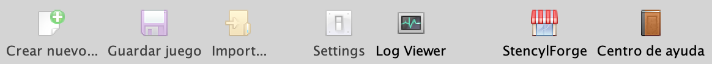
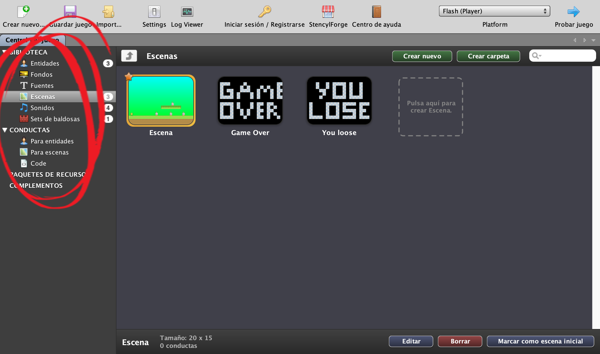
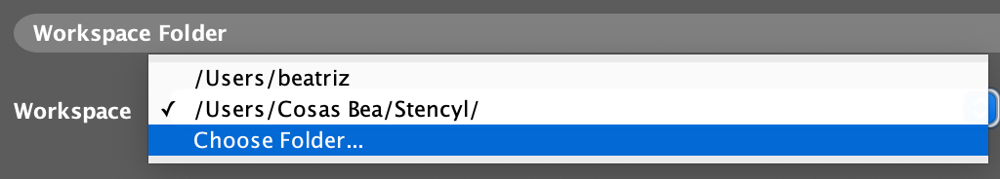

Stencyl es un entorno de desarrollo 2D desde el cual, partiendo de la filosofía “desarrolla una vez, juégalo
en cualquier parte”, nos propone todas las herramientas necesarias para crear minijuegos en flash para web e
iOS de una forma fácil, rápida y cómoda.
El software está disponible de forma gratuita, con ciertas opciones de publicación disponibles para la versión
PRO (versión de pago). En este curso utilizaremos la versión gratuita 4.0.4.

Permite crear videojuegos desde Linux, OS X y Windows para varias plataformas como IPhone, IPad, Android, Flash, Windows, Mac, Linux, etc.
Todo lo que quieras. Stencyl cuenta con una variedad enorme de librerías perfectamente preparadas para
integrarlas en tus minijuegos.
Además, su comunidad no para de crecer y de aportar valiosos recursos que podremos usar.
Con Stencyl las posibilidades son ilimitadas y podrás en poco tiempo ir creando minijuegos.
Podrás ir creando minijuegos atendiendo a factores como la gravedad, la masa, las dimensiones de la pantalla,
el rendimiento de la máquina, etc.
Contiene física y colisiones, que pueden ser selectivamente desactivados para regular el rendimiento del juego
según el ordenador utilizado.
La aplicación incluye varios módulos que se utilizan para llevar a cabo las tareas necesarias para la creación
del juego:
- Editor de Entidades (personajes): Es la herramienta central para crear, configurar y personalizar
actores (personajes, enemigos, objetos) y sus comportamientos en el juego. Permite definir
animaciones, física, colisiones y comportamientos lógicos arrastrando y soltando bloques.
- Editor de Fondos: Permite crear, importar y gestionar imágenes de fondo y planos anteriores
(foregrounds) para las escenas de juego.
- Editor de Fuentes: Permite crear, importar y personalizar tipografías (TTF) o fuentes de mapa de bits
(Bitmap Fonts) para videojuegos. Permite ajustar tamaño, color e importar imágenes para estilos
personalizados, siendo crucial para definir el estilo visual del texto en la pantalla.
- Editor de Escenas: Permite diseñar niveles de los juegos, permitiendo añadir fondos, colocar
actores, configurar físicas y definir comportamientos específicos de la escena.
- Editor de Sonidos: Permite importar, organizar y configurar clips de audio (MP3, OGG) directamente
dentro del motor de juegos, facilitando la gestión de música de fondo y efectos de sonido.
- Editor de Sets de Baldosas: Es una herramienta integrada esencial para gestionar los mosaicos gráficos
(tiles) utilizados en la creación de escenas y niveles. Permite importar conjuntos de imágenes,
definir colisiones (formas físicas), animar tiles individuales y organizar la apariencia del entorno
de juego mediante una interfaz dividida que muestra el tileset completo y propiedades detalladas.
- Editor de Conductas (comportamientos): Permite programar lógica de juego, movimientos y físicas para
actores y escenas. Permite asignar comportamientos predefinidos (comportamientos de actor o escena) y
personalizarlos, integrando eventos, físicas y animaciones.
Estos módulos se encuentran en la parte superior izquierda de nuestra pantalla.

Las ventajas de Stencyl es que es una multiplataforma que se puede utilizar en Windows, Linux y Mac. Tiene una interfaz muy completa y detallada. Además, exporta el juego en varios formatos (.exe, .app, .flash, .apk) y cuenta en su web con Stencylpedia, una guía completa de todas sus funciones, con ejemplos y plantillas de personajes, fondos y sonidos.

Programar en Stencyl nos facilita la creación de nuestros videojuegos, ya que ofrece manejo de colisiones y
física, una interfaz muy amigable y detallada.
No obstante, también nos permite usar funciones más complejas si así lo deseamos, además de ser un software
de manera gratuita que incluye sus propias guías.